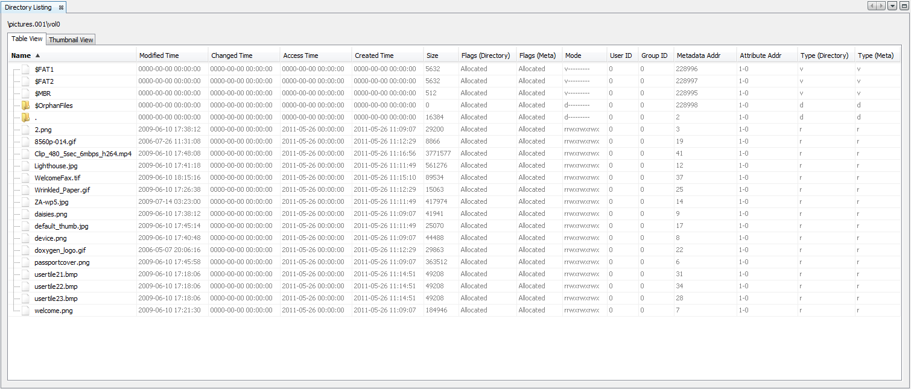

Table Results Viewer (Directory Listing) displays the data catalog as a table with some details (properties) of each file.
The properties that it shows are: name, time (modified, changed, accessed, and created), size, flags (directory and meta), mode, user ID, group ID, metadata address, attribute address, and type (directory and meta).
Click the Table Viewer tab to select this view.
The Results Viewer can be also activated for saved results and it can show a high level results grouped,
or a results at a file level, depending on which node on the Directory Tree is selected to populate the Table Results Viewer.
Below is an example of a "Table Results Viewer" window:
